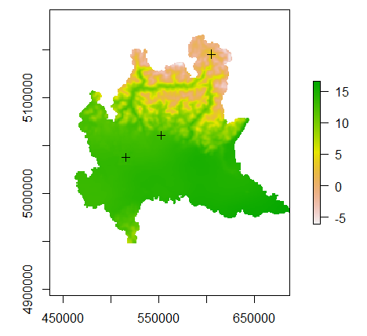
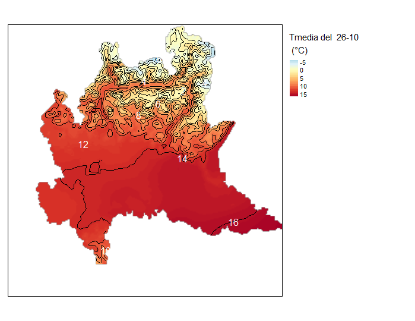

ESEMPI PRATICI
Examples_ita.RmdCalcolo della Temperatura media giornaliera (media giornaliera dei raster orari t2m_ana)
L’esempio utilizza la funzione WPCS_query() per passare la seguente rsql query che calcola la media per la coverage t2m_ana per il giorno 26/10/2020 (vengono considerati i 24 valori registrati per le ore 00.00 fino alle ore 23.00 del 26/10):
for $c in ( t2m_ana ) return encode(
condense +
over $t ansi(imageCrsDomain($c[ansi("2020-10-26T00:00:00.000Z":"2020-10-26T23:00:00.000Z")], ansi))
using ($c[ansi($t)]/24), "tiff")Script R:
## 0. Installazione (NB! Scnnettersi dalla VPN)
#library(devtools)
#devtools::install_github("ARPASMR/myCubeR@HEAD")
## 1. Caricamento della libreria MyCubeR
library(myCubeR)
library(raster)
## 2. Connettersi alla VPN per collegarsi a Rasdaman
# Elenco delle coverage disponibili
coverages=getCapability()
coverages
#Selezione della coverage tm2_ana
coverage=getCapability()[5]
coverage
tm2_ana=coverage
#Vediamo quali sono gli estremi delle date disponibili e quali le varie date (per verificare che il dato sia orario)
temp_ext=coverage_get_temporal_extent(coverage=coverage)
temp_ext
# Scegliamo per esempio di voler fare la media giornaliera del giorno 26/10/2020
# A) Verifica. Verifichiamo che ci siano tutti i timestamps
# A1) Con "R"
data_inizio="2020-10-26 00:00:00"
data_fine="2020-10-26 23:00:00"
start.date <- strptime(data_inizio, "%Y-%m-%d %H:%M:%S")
end.date <- strptime(data_fine, "%Y-%m-%d %H:%M:%S")
a=seq(from=start.date, to=end.date, by="hour") #length(a)
# oppure
# a=seq(from=start.date, by = "hour", length.out = 24)
date_range=format(a, "%Y-%m-%dT%H:%M:%OS3Z")
lista_completa=as.character(date_range)
all_timestamps=coverage_get_timestamps(coverage=tm2_ana)
timestamps=all_timestamps[all_timestamps%in%lista_completa] #Timestamps presenti in quelle date
difs <- setdiff(lista_completa,timestamps) #Timestamp che (eventualmente) mancano in quelle date
print(paste0("[R]: Ci sono ", length(timestamps), " timestamps."))
if (!identical(difs,character(0))) print (paste0("La serie temporale disponibile non è completa! Mancano i timestamps:", difs))
# A2) Conto i numeri di timestamps presenti in quelle date utilizzando una query WCPS da inviare al server Rasdaman
# How many data points are there between 2020-10-26T00:00:00.000Z" e "2020-10-26T23:00:00.000 ?
query1='for $c in ( t2m_ana ) return encode(
condense +
over $t ansi(imageCrsDomain($c[ansi("2020-10-26T00:00:00.000Z":"2020-10-26T23:00:00.000Z")], ansi))
using 1, "text/csv")'
numero=WPCS_query(proper_query=query1, FORMAT="text/csv", filename=NULL, query_url=NULL)
print(paste0("[RASDAMAN]: Ci sono ", numero, " timestamps."))
# B) Calcolo la media giornaliera
# B1) Vedere la procedura in R di Zanetti. Raster per il giorno 26/10/2020 salvato come t2m_ana_2020-10-26.tif
rasterMZ=raster("C:\\WSL_folder\\t2m_ana_2020-10-26.tif") ###MODIFICARE FILE OUTPUT PRODOTTO
# B2) Rasdaman
# start=format(start.date, "%Y-%m-%dT%H:%M:%OS3Z")
# end=format(end.date, "%Y-%m-%dT%H:%M:%OS3Z")
# intervallo=paste0('"',start,'":"',end,'"')
##> start: "2020-10-26T00:00:00.000Z"
##> end: "2020-10-26T23:00:00.000Z"
#somma
query='for $c in ( t2m_ana ) return encode(
condense +
over $t ansi(imageCrsDomain($c[ansi("2020-10-26T00:00:00.000Z":"2020-10-26T23:00:00.000Z")], ansi))
using $c[ansi($t)], "tiff")'
raster_tot=WPCS_query(proper_query=query, FORMAT="image/tiff", filename="C:\\WSL_folder\\tm2_ana_somma_RASDAMAN.tiff", query_url=NULL)
#media
query2='for $c in ( t2m_ana ) return encode(
condense +
over $t ansi(imageCrsDomain($c[ansi("2020-10-26T00:00:00.000Z":"2020-10-26T23:00:00.000Z")], ansi))
using ($c[ansi($t)]/24), "tiff")'
raster_gg=WPCS_query(proper_query=query2, FORMAT="image/tiff", filename=NULL, query_url=NULL)
raster_gg
filename2="C:\\WSL_folder\\tm2_ana_gg_RASDAMAN.tiff"
writeRaster(raster_gg, filename=filename, format = "GTiff", overwrite = TRUE)
print(paste0("Raster salvato in:",filename2))
plot(raster_gg)
# Verificare il valore medio in alcuni punti
pointCoordinates=read.csv("C:\\WSL_folder\\coordinate_stazioni.csv",header =TRUE, sep = ";")
pointCoordinates
CRS=raster_gg@crs
coordinates(pointCoordinates)=~UTM_EST+UTM_NORD
projection(pointCoordinates) <- CRS
#Step1: Plotto le stazioni
#compareCRS(raster_gg, pointCoordinates)
#> [1]TRUE
plot(pointCoordinates, add = TRUE)
# Step2: Combine raster values with point and save as a CSV file.
values <- raster::extract(raster_gg, pointCoordinates)
valori_MZ <- raster::extract(rasterMZ, pointCoordinates) ## DA ELIMINARE SE NON SI VUOLE VEDERE CONFRONTO CON PROCEDURA "MANUALE"
x <- data.frame(pointCoordinates)
tmp <- cbind(x, tm2_ana_gg=values, tm2_ana_gg_MZ=valori_MZ) ## DA MODIFICARE SE NON SI VUOLE VEDERE CONFRONTO CON PROCEDURA "MANUALE" CON: tmp <- cbind(x, tm2_ana_gg=values)
tmp
# Per salvare la tabella
write.table(tmp, file="C:\\WSL_folder\\combinedPointValue.csv", sep= ";")
# Step3: isolinee di temperatura
#figure=paste0("C:\\WSL_folder\\",name,".png")
#png(figure)
# make plot
rstr_finale=raster_gg
library(tmap)
#library(tmaptools)
tm_shape=tmap::tm_shape
tm_raster=tmap::tm_raster
tm_legend=tmap::tm_legend
tm_lines=tmap::tm_lines
tm_text=tmap::tm_text
tm_shape(rstr_finale) + tm_raster(style= "cont", palette = "-RdYlBu", title = paste("Tmedia del ",day,"\n (°C)")), interpolate==TRUE))++
tm_shape(rc) + tm_lines(col = "black", text = "level", breaks = rc$level, labels = as.character(rc$level)) +
tm_text("level", col = "white", size = 1.0) + tm_legend(outside = TRUE)